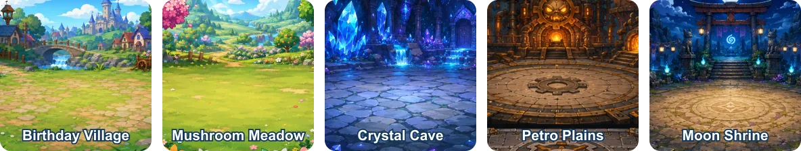

1. Birthday Village
The hub of the adventure, home to Elder Brightbeard, Dave, Bobo’s shop, Grandma Berrybun and the village crystal. Paths eventually connect it to every major campaign area and the Sunrise Homestead.
Asteria-007 atlas
The campaign begins in a cheerful village and climbs through forests, caves, ruins and the Bald Moon Tower. Defeating Xelar opens two harder postgame regions beyond the original map.
Explore in your browser
Main adventure and home base
The hub of the adventure, home to Elder Brightbeard, Dave, Bobo’s shop, Grandma Berrybun and the village crystal. Paths eventually connect it to every major campaign area and the Sunrise Homestead.
A claimable base south of the village. Gather materials, place more than forty build pieces, stamp blueprints, grow crops and unlock Comfort bonuses, visitors, stations and landmarks.
The first field region contains trees, stone, flowers, berries and mushroom creatures. Moldor the Mushroom Grump guards the Meadow Gem and the deed required to claim the homestead.
A mining region rich in Crystal Shards and Ore Chunks. Crystal spiders and cave creatures protect the deeper passages, while the Cracked Crystal Guardian controls the Cave Gem.
Sleeping engines and scrap machines make this the best early source of Gear Parts. Repair the generator, recruit Petroman and challenge the Petro Titan.
A fast-moving pine forest filled with timber, hidden treasure and wildlife. Ruush joins after the Elder Treeguard hunt, opening another tactical party option.
Moon Herbs grow around this luminous temple. Brewing Moon Tea is central to Haraku’s recruitment, and the Lunar Shade guards the region’s Gem.
The remains of the Gem Guardians’ old capital contain relics, sealed mechanisms and Guardian Prime. Ancient Relics from this region support advanced recipes.
Xelar’s fortress is populated by imps, hellhounds, corrupted knights and shadow creatures. Players fight Xelar’s Echo before confronting Xelar the Bald Wizard himself.
This frozen postgame region unlocks after Xelar falls. Elite demons guard rare materials and the Frozen Cache. The Void Succubus Queen blocks the route onward.
A warm shore at the edge of the known world, populated by shell creatures, corrupted guards and crystal slimes. The Tide Spirit Sovereign is the final regional boss.
Progression route

The early campaign uses Birthday Village as its central crossroads. Mushroom Meadow teaches combat and harvesting; the homestead then introduces building. Crystal Cave, Petro Plains, Ruushwood and Moon Shrine expand crafting and the party. Ancient Ruins reveals the history of the Gems, and Bald Moon Tower completes the main confrontation.
Frostpeak Reaches does not open until Xelar is defeated. Beating the Void Succubus Queen unlocks Sunsand Isle. This creates a clear postgame chain instead of placing the hardest enemies into the opening world.
Resource geography
| Material | Best regions | Typical use |
|---|---|---|
| Wood and Stone | Mushroom Meadow, Ruushwood, Homestead | Refined building pieces and stations. |
| Crystal Shards and Ore | Crystal Cave, Frostpeak Reaches | Weapons, equipment and advanced crafting. |
| Gear Parts | Petro Plains | Petroman recruitment and machinery recipes. |
| Moon Herbs | Moon Shrine, Frostpeak Reaches | Moon Tea and magical recipes. |
| Ancient Relics | Ancient Ruins, Sunsand Isle | Late-game gear and treasure progression. |
Nodes respawn on timers. Revisit earlier regions between story chapters instead of treating gathering areas as one-time locations.